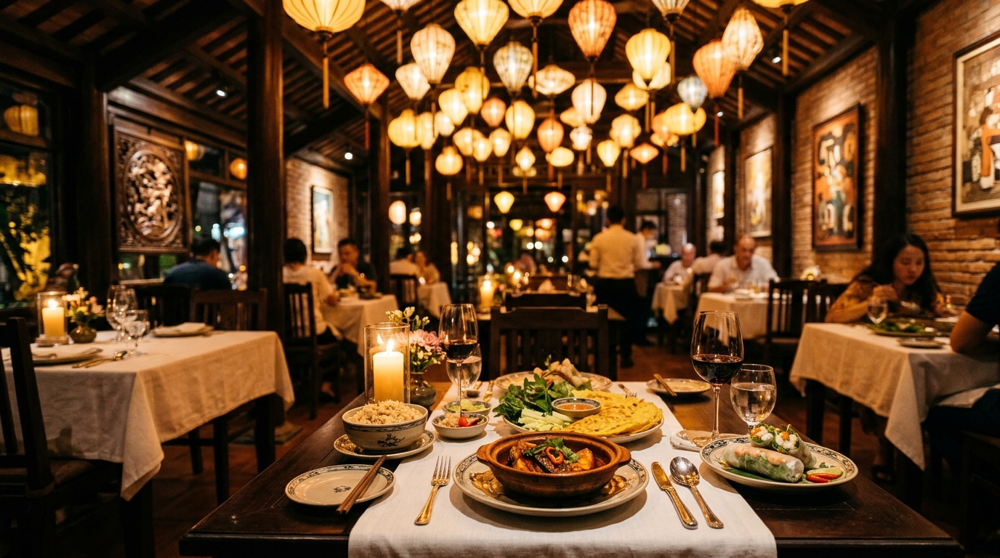
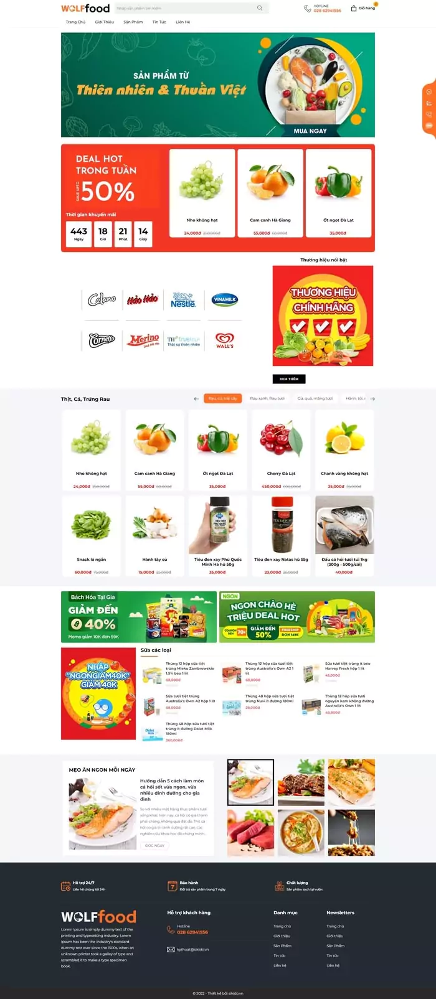
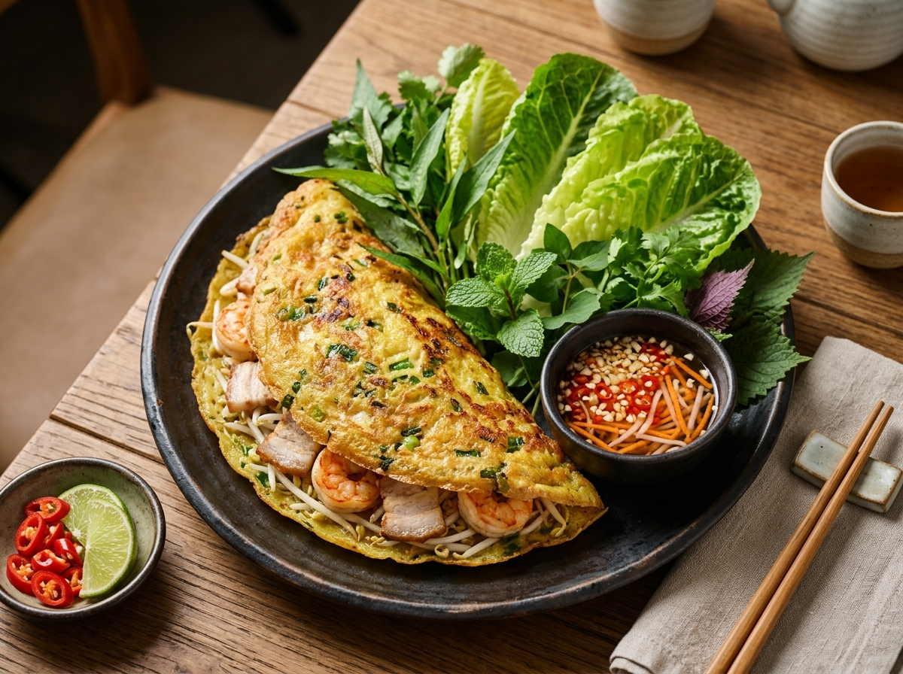
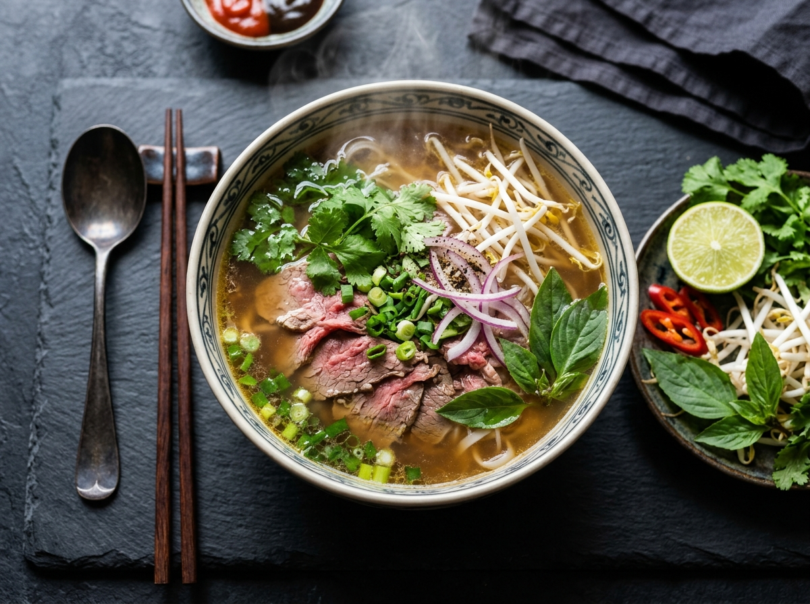

Vị Xưa Quán được ấp ủ từ căn bếp nhỏ bên bờ sông An Cựu (Cố Đô Huế) vào những năm 1990. Người bà của chúng tôi - một phụ nữ Cố Đô thuần thục nghệ thuật gia vị truyền thống - luôn dặn dò con cháu: "Nấu ăn không thể vội. Muốn cá kho chắc thịt thơm tiêu, phải chịu khó kho hai lửa trong niêu đất nung. Muốn nước dùng ngọt thanh, phải ninh củ quả và mía lau chứ không được cậy nhờ bột nêm nhân tạo."
Trải qua hơn ba thập kỷ và kế thừa đến thế hệ thứ ba, Vị Xưa Quán vẫn giữ nguyên vẹn triết lý ấy giữa lòng đô thị phồn hoa. Từng chiếc niêu đất Bát Tràng, từng muỗng nước mắm nhĩ nhãn cốt cá cơm Phú Quốc đều được chọn lọc bằng tất cả sự trân trọng văn hóa ẩm thực tổ tiên.

Chúng tôi tin rằng sự bền vững của một nhà hàng không nằm ở chiêu trò quảng bá, mà ở sự tử tế trong từng gia vị đặt lên đĩa ăn của khách hàng.
Giữ được lượng vi khoáng tự nhiên và độ nóng âm ỉ, giúp thịt kho tiết ra chất béo giòn mà không ngấy, cơm cháy giòn rụm không cháy khét.
Tuyệt đối nói không với mì chính và bột ngọt công nghiệp. Vị ngọt được chưng cất tự nhiên từ mía lau, hạt sen tươi, lê ngọt và xương hầm 18 tiếng.
Tôm đất, cá bống sông và rau rừng được vận chuyển tươi sống mỗi sớm mai, sử dụng hết trong ngày để bảo toàn hàm lượng dinh dưỡng cao nhất.
Đội ngũ nghệ nhân bếp trưởng có kinh nghiệm dày dạn, nắm giữ công thức ủ nước màu đường thốt nốt và phối hợp 18 loại gia vị thảo mộc bí truyền.
Với diện tích hơn 650m² bao gồm sân vườn thoáng đãng và 4 phòng tiệc VIP riêng biệt, Vị Xưa Quán là điểm hẹn lý tưởng cho gia đình và đối tác.



Bếp than hồng đã đỏ lửa, niêu cơm dẻo đã sẵn sàng chờ đón những nụ cười sum họp của Quý thực khách.